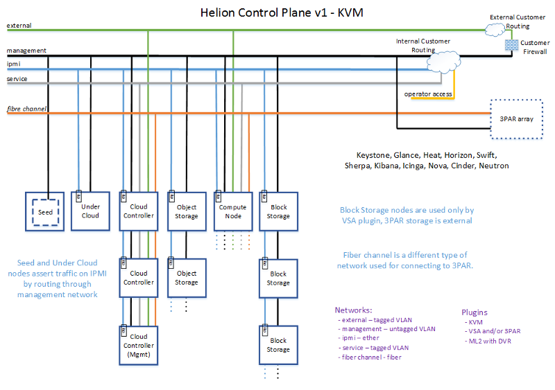
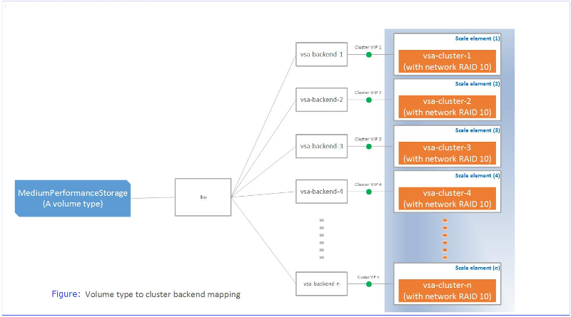

HP Helion OpenStack® 1.0 Technical Overview
This page introduces you to HP Helion OpenStack, an enterprise-grade distribution of the OpenStack cloud operating system.
HP Helion OpenStack allows you to easily deploy OpenStack Cloud Services in a secure, highly available configuration, and subsequently deploy, manage and operate your cloud infrastructure in production.
It is designed to offer a number of value-added services that complement and enhance OpenStack and set up a cloud. HP OpenStack is enabled to manage KVM and VMWare ESX hypervisors.
- HP Helion OpenStack services
- Deployment architecture
- Hardware requirement
- Network architecture
- Network planning
- Installation planning
- High availability
- Updates and extensions
- Operational management
- Next Steps
HP Helion OpenStack Services- Functional Overview
The following table outlines the functionality of HP Helion OpenStack services based on the type of users - Users and Administrators. For a complete description of these services, see the Services Overview page.
| Service | ||
|---|---|---|
| Compute Operations (Nova) | The HP Helion OpenStack Compute supports an API to instantiate and manage virtual servers on KVM and VMware ESX hypervisors. Users can create and manage the life cycle of virtual machines (suspend, resume, snapshot, and so forth), attach block storage volumes, work with security groups and key pairs, and associate floating IP addresses. Learn more about the Compute Operations service. |
Administrators can also configure server flavors, modify project quotas, configure availability zones, enable and disable services, and work with virtual machines. |
| Block Storage Volume (Cinder) |
The HP Helion OpenStack Block Storage supports an API to instantiate and manage block storage volumes on HP StoreServ 3PAR devices and StoreVirtual Software Defined Storage. User can create volumes, attach them to VMs, and take snapshots and backups. Learn more about the Volume Operations service. |
Administrators can deploy StoreVirtual VSA Software Defined Storage, and configure drivers for StoreVirtual and StoreServ 3PAR using the Sirius service. Administrsators can create volume types and associate quality of service with volume types, and map StoreServ and StoreVirtual backends to the volume types. |
| Object Operations (Swift) | The HP Helion OpenStack Object and Operations service helps manage the storage and retrieval of objects in publicly accessible physical machines.
Users can configure storage containers, upload and download container files, and delete container files. Learn more about the Object Operations service and Ringos. |
Administrators can easily start with two auto-configured storage nodes, and then scale out by deploying additional Swift Proxy and Object Storage nodes. The Ringos CLI Utility is provided to format drives and easily manage Swift rings. |
| Network Operations (Neutron) | The HP Helion OpenStack Network Operations service provides network connectivity and IP addressing for virtual machines managed by Compute service. User can create and configure virtual networks and routers, subnets, floating IP addresses, security groups, load balancers and firewalls. Learn more about the Network Operations service. |
Administrators can also create an external network, and work with DHCP agents and L3 agents. |
| Identity Operations (Keystone) | The HP Helion OpenStack Identity Operations service provides one-stop authentication.
Learn more about the Identity Operations service. |
Administrators can create and configure projects/tenants and users, and set credentials, and issue security tokens. MySQL and LDAP/ADS are supported. |
| Image Operations (Glance) | The HP Helion OpenStack Image Operations service helps to manage virtual machine images, including querying and updating image metadata, and retrieval of the actual image data.
User can create, modify, and delete private images. Learn more about Image Operations. |
Administrators can create, modify and delete public images and private images. These images are made available to the users. |
| Orchestration (Heat) | The HP Helion Orchestration service enables you to deploy and configure multiple composite cloud applications using template formats. It enables you to work with nested stacks, which are a mechanism of using built-in stack definitions for specific resource types. Users can create stacks, suspend and resume stacks, view information on stacks, view information on events, work with stack templates and infrastructure resources (such as servers, floating IPs, volumes, and security groups). Learn more about the Orchestration services. |
Administrators can deploy and configure the OpenStack overcloud using the Orchestration service provided in the undercloud. |
| Sherpa | The HP Helion Sherpa service is a content distribution catalog service provides a mechanism to download the content such as Image Operation images, Orchestration templates, and so forth, from the HP Helion CODN and install the content in the appropriate service such as the Identity service etc.
Learn more about the HP Helion Sherpa Service. |
Administrators can download content such as software patches and updates from the HP Helion CODN and apply the downloaded content to their Helion OpenStack installation. |
| EON services | The HP Helion ESX onboarding (EON) service is an inventory which interacts with the VMware vCenter server and collects the information available at the datacenters and clusters. The information is used for deployment and configuration of ESX Proxy Compute node. EON service is deployed in undercloud controller node.
Learn more HP Helion EON services. |
Administrators can interact with VMware vCenter servers to discover, inventory and map ESX clusters to be used by the Compute service. |
| Sirius services | The HP Helion OpenStack Sirius service is a REST-based web service for storage device management. It is used to configure of storage services such as the Block Storage and the Object Operations services that run in the overcloud and manage various storage devices.
Learn more HP Helion OpenStack Sirius service. |
Administrators can maintain an inventory of used 3PAR devices and CPGs, and StoreVirtual devices and VSAs and configure Cinder 3PAR and StoreVirtual backends. |
| DVR services | HP Helion OpenStack Distributed Virtual Routing (DVR) allows you to define connectivity among different Virtual Network Switches (VNS) as well as connectivity between VNS hosts and the external network. HP Helion OpenStack provides Distributed Virtual Routing to cloud users.
Learn more HP Helion OpenStack DVR service. |
Administrators can create centralized router (legacy router). |
Deployment architecture
You can deploy HP Helion OpenStack in two different environments depending on the hypervisor: KVM or ESX.
KVM environment
The following diagram depicts a simplified deployment scenario using KVM.

ESX environment
The following diagram depicts a simplified deployment scenario using ESX.

Hardware requirement
The following hardware requirements are required to install HP Helion OpenStack.
- At least 8 and up to 100 baremetal systems with the following configuration:
- A minimum of 32 GB of physical memory
- A minimum 512GB of disk space, required for installation.
- A minimum of 1 x 10 GB NIC with PXE support
- Capable of hosting VMs
- Boot order configured with Network/PXE boot as the first option
- BIOS configured:
- To the correct date and time
- With only one network interface enabled for PXE/network boot and any additional interfaces should have PXE/network boot disabled
- To stay powered off in the event of being shutdown rather than automatically restarting
- Running the latest firmware recommended by the system vendor for all system components, including the BIOS, BMC firmware, disk controller firmware, drive firmware, network adapter firmware, and so on
A seed VM host, also called the installer system, to run the baremetal install and host the Seed VM with the following configuration:
- A minimum of 16 GB of physical memory
- A minimum of 1 TB of disk space
- Virtualization enabled
- Ubuntu 14.04 installed
For more information of Hardware configuration see Hardware configuration and Support Matrix.
Network architecture
The following information describes the network configuration for the physical networks and virtual networks, which must be configured by the network administrator.
Physical network architecture
This table provides an overview of the physical network configuration requirements you must meet, with the following assumptions:
Physical network ports on each server
- One IPMI port
- One physical ethernet port (for example, eth0) for the hypervisor/OS
Network fabric
- Two physical links, one for IPMI and one for the hypervisor/OS
- Network switches capable of basic VLAN, L2 and L3 functions;
- The physical hypervisor/OS network is shared by a number of logical networks, and each logical network has its own VLAN and IP subnet
For detailed information, see the Preparing the network section of the Prerequisites.
| Network | Description | VLAN type | Server port |
|---|---|---|---|
| IPMI / iLO | Network for server hardware management | Untagged | IPMI or iLO |
| Undercloud management |
|
Untagged | eth0 |
| Overcloud management | Traffic for overcloud internal OpenStack calls, Image Operations service downloads, and so forth. | Untagged | eth0 |
| SDN | Network between workload VMs, for example VxLAN traffic. | Untagged | eth0 |
| Storage | iSCSi traffic between VMs and storage products like StoreVirtual | Untagged | eth0 |
| External |
|
Tagged | eth0 |
| Service | Connects trusted VMs in overcloud to communicate with cloud infrastructure components in undercloud | Tagged | eth0 |
| Swift | Communication between Object Operations servers (includes user data) | Untagged | eth0 |
Virtual networks
The logical networks listed in the following table are implemented as VLANs on the physical network. The virtual networks are different for KVM and ESX.
Virtual networks for KVM hypervisor support
The logical networks listed in the following table are implemented as VLANs on the physical network.
| Network | Description | VLAN type | Server port |
|---|---|---|---|
| Management | This network is used for most cloud traffic including PXE boot nodes, tenant access to service APIs, internal API traffic between (one services to another), HA heartbeats, tenant access to services, VxLAN traffic for between tenant VMs, VM access to block and object storage, object storage replication and synchronization between StoreVirtual VSAs, Object Operations service nodes, MySQL clusters, RabbitMQ clusters, keepalived, CODN access to catalog, logging traffic to centralized logging, monitoring checks to Icinga. | untagged | eth0 |
| Service | Trusted VMs communicate with the cloud infrastructure component. | tagged | eth0 |
| Fiber Channel | Fiber Channel SAN (Storage Area Network) used for data path between Compute Servers and 3PAR arrays. | ||
| External | This network connects compute nodes and controller nodes to the Internet or Intranet. External network access is required for DVR routing from compute nodes.
Floating IPs on the external network can be attached only to VMs that require a public IP address. | tagged | eth0 |
Virtual networks for ESX hypervisor support
The logical networks listed in the following table are implemented as VLANs on the physical network.
| Network | Description | VLAN type | Server port |
|---|---|---|---|
| Management | This network is used for most cloud traffic including, tenant access to service APIs, internal traffic between services, VxLAN traffic between tenant VMs, VM access to block and object storage, replication and synchronization between StoreVirtual VSAs, Object Operations service nodes, MySQL clusters, RabbitMQ clusters, keepalived, CODN access to catalog, logging traffic to centralized logging, monitoring checks to Icinga. | untagged | eth0 (PXE boot for overcloud servers) |
| External | This network connects compute nodes and controller nodes to the Internet or Intranet. External network access is required for DVR routing from compute nodes.
Floating IPs on the external network can be attached only to VMs that require a public IP address. |
tagged | eth0 |
| ESX | This network connects the traffic between OVSvApp VMs running on every ESX Host, Network Operations service and the vCenter Proxy that exists for every vCenter, and vCenter Proxy to communicate with the message queue for Block Storage and Network Operations. Also, connects EON to communicate with the vCenter server. | tagged | eth0 |
| ESX Tenant | This network is a tenant network for ESX virtual machines. The Network Operations service assigns IP addresses for virtual machines on these networks. | tagged | eth0 |
Network planning
You must manage and prepare the network based on the type of hypervisor.
For more details information on network planning see Preparing your network.
Network security
The Network Administrator must set up routing and firewalls for tenants to access service APIs which are only exposed on the management network. For more information on guidelines for setting up security firewalls and routing see Network security.
Installation planning
HP Helion OpenStack uses three linked installation phases, called OpenStack-on-OpenStack (TripleO), to deploy a complete OpenStack cloud. TripleO simulates the deployment of OpenStack by creating and configuring baremetal servers to successfully run a cloud deployment.
TripleO is OpenStack's official project for deployment, configuration, and life cycle management of OpenStack clouds. A TripleO installation includes a seed, undercloud and overcloud:
| Seed VM | The Seed cloud is deployed as a VM instance. This image contains minimal OpenStack services required to deploy and update the undercloud on a baremetal server.
The host server running the seed VM is also used to run backup restore procedures for the seed VM, undercloud and overcloud. The seed VM is also used to run the StoreVirtual CMC Management Console. The seed VM does not run in a HA configuration, but is an important component of the cloud. Learn more about the Backup and Restore procedures to restore the seed VM in event of server problems. |
| Undercloud | A single-server deployment of a limited set of OpenStack services, called the undercloud, is used to deploy, test, manage, and update all the overcloud servers.
The undercloud comprises the Compute, Ironic, Networking Operations, Object Operations, Identity Operations, and Orchestration services, which are used to deploy and configure various nodes of the overcloud on baremetal servers. The Centralized Logging and Monitoring components run in the undercloud and can be accessed using a Web Browser. The Sherpa, Eon and Sirius services also run in the undercloud, and can be accessed via panels in the Horizon Dashboard fr the undercloud. The undercloud does not run in a HA configuration, but is an important component of the cloud. Learn more about the Backup and Restore procedures to restore the undercloud in event of server problems. |
| Overcloud | The overcloud is the functional cloud available to end users for running guest virtual machines and workloads. The overcloud comprises OpenStack Cloud Services deployed on controller nodes, and a number of compute nodes and storage nodes.
The cloud services in the overcloud, used by end users, include Compute, Networking, Block Storage, Object Operations, Horizon, Image Operations, Identity Operations, and Orchestration as described in the Functional Overview section above. These services are deployed in a highly available cluster across the three Controller nodes. For KVM based Hypervisor environments, the overcloud also comprises Nova Compute nodes running the KVM hypervisor, and Block Storage nodes running the StoreVirtual VSA. |
Note: You cannot build or rebuild the images. Direct editing of the Orchestration (Heat) templates is possible, but not supported. Configuration is limited to those items supported by the configuration tool and Horizon.
Learn more about installing and configuring HP Helion OpenStack.
Installation options
HP Helion OpenStack is provided with two baremetal installation options depending on your system configuration. It allows you to manage the KVM and ESX hypervisors and provision virtual machines.
KVM Hypervisor with HP StoreVirtual VSA support
Kernel-based Virtual Machine (KVM) is a virtualization infrastructure for the Linux kernel, which turns it into a hypervisor. KVM requires a processor with hardware virtualization extension.
HP Helion OpenStack architecture diagram for KVM network architecture.
HP StoreVirtual VSA Software is a Virtual Storage Appliance that provides the complete array functionality on top of Linux KVM environment without external hardware. VSA eliminates the need for external shared storage required to implement Block Storage features. VSA uses scale-out, distributed clustering to provide a pool of storage with enterprise storage features and simple management at a reduced cost.
HP Helion OpenStack architecture diagram for Store Virtual volume type mapping

Note: Your HP Helion OpenStack installation can be configured to use 3Par for block storage.
ESX Hypervisor with HP Virtual Cloud Networking (VCN) application support
HP Helion OpenStack supports VMWare ESX hypervisor. With our ESX integration, you can provision and manage an overcloud ESX cluster. VMWare vCenter Compute driver is used as a part of ESX integration. The VMware vCenter driver connects to ESX clusters in a vCenter through Compute proxy nodes. A Compute node scheduler sees each cluster as compute and uses the same for scheduling a new instances.
An ESX Proxy Compute driver communicates to VMware vCenter server through VI SDK. All the details of vCenter in the Cloud Controller are required to be captured. The EON service sub-component, captures details of the vCenter server in a Cloud Controller and provides the details of the clusters for configuring the list of clusters managed by ESX Proxy Compute node.
The ESX integration uses the OVSvApp application to connect the vCenter networking to the Network Operations controller to manage workload networks.
HP Helion OpenStack architecture diagram for ESX
The HP Virtual Cloud Networking (VCN) application is an enhanced Networking Operations (Neutron) module of HP Helion OpenStack that delivers network virtualization to orchestrate your data center infrastructure.
HP VCN enables you to build a robust, multi-tenant networking infrastructure that delivers ready-to-use compute, storage, and networking by providing;
- Scalable, secure, and hardened enterprise cloud networking
- Automated delivery of secure isolated networks in minutes
DNS as a service (DNSaaS)
After installing HP Helion OpenStack, you have the option to install HP Helion OpenStack DNS as a service (DNSaaS) support. The HP Helion OpenStack DNS (Domain Name System) service, based on the OpenStack Designate project, is a managed DNS service engineered to help you create, publish, and manage your DNS zones and records securely and efficiently to either a public or private DNS server network.
Learn more about DNSaaS installation and configuration.
High availability
The HP Helion OpenStack High Availability (HA) architecture ensures that cloud resources are always available on request, resulting in uninterrupted operations for users.
The OpenStack services are deployed in a three node Controller cluster, which ensures availability of stateless services like API services and stateful services like MySQL or RabbitMQ.
For more details on HA configuration, refer to HP Helion OpenStack High Availability and OpenStack HA Guide.
Updates and extensions
Updates and extensions provides a mechanism to download and install the content and updates for the overcloud.
For more information refer Updates and extension.
Operational management
The following systems help you manage your cloud services.
Centralized Logging
Centralized logging is based on Logstash, Elasticsearch, and Kibana Dashboard which is deployed in the undercloud server.
Centralized logging helps the administrator triage and troubleshoot the distributed cloud deployment from the undercloud. The user is not required to access the several remote server (SSH) to view the individual log files.
Note: Logging requires 4GB of disk space to make sure that all logging messages are retained.
Monitoring
The administrator can monitor the availability of all hosts and services in the overcloud using the Icinga Monitoring server deployed in the undercloud.
System and service health checks are based on the check_mk framework. Health checks are executed locally on each node, and their results are sent over to the central Icinga server, thereby distributing the processing and allowing the Icinga server to scale up. When new nodes are added to the cloud, they are automatically discovered and monitored.
For more information refer to Monitoring.
Add, remove and replace nodes
HP Helion OpenStack provides automation scripts to add capacity to the cloud for compute, storage, and networking.
You can prepare hardware servers and incrementally deploy HP Compute nodes, HP StoreVirtual VSA Block Storage nodes, and OpenStack Swift Proxy and Object Storage nodes.
Conversely, you can decommission servers and remove specific nodes from the cloud.
If any of the controller nodes fails, you can remove and replace controller nodes, while re-connecting them automatically into the HA cluster.
For more information refer to Removing and Replacing a Failed Overcloud Controller.
For more information on adding (Scale Out) or removing (Scale In) nodes (KVM Compute Nodes) to an already-installed overcloud on a KVM hypervisor, see HP Helion OpenStack® Add (Scale-Out) and Remove (Scale-In) Nodes on KVM Hypervisors.
Backup and Restore nodes
Backup and restore scripts and procedures are provided for the seed VM, undercloud, overcloud management controller (running singleton services like Sherpa), and the MySQL database deployed in the controller cluster. These scripts are to be used by administrators managing the OpenStack Cloud.
Backup and Restore of VM instances/snapshots and volumes/snapshots for workloads in the cloud is supported using the Object Storage service.
For more information see HP Helion OpenStack® Back Up and Restore
Next Steps
Review the HP Helion OpenStack Support Matrix.
To prepare your environment for the installation, see HP Helion OpenStack® Installation: Prerequisites.